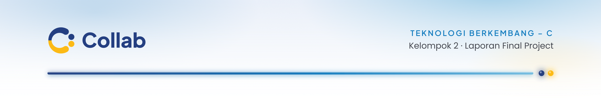
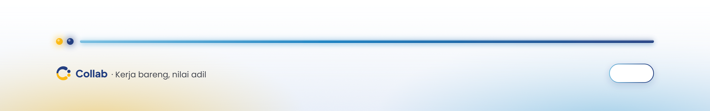

Di tugas kelompok sering ada anggota yang kerja keras dan ada yang cuma numpang nama. Dosen dan teman sekelompok susah membuktikan siapa mengerjakan apa, jadi nilai individu sering tidak adil.
Collab mencatat setiap tugas lengkap dengan PIC, bobot, deadline, dan bukti pengerjaan yang divalidasi anggota lain. Absensi rapat memakai QR yang berganti terus, ada peer review anonim, lalu semua data itu dihitung menjadi skor kontribusi tiap anggota.
Bagaimana membuat kontribusi tiap anggota kelompok terlihat jelas, terukur, dan bisa dipertanggungjawabkan?
